Asset Management (inventory.ideafast.eu)
- General Introduction
- Login
- Create Location
- Create Asset Model
- Create Clinical Staff Admin
- Create Patient User
- Create Asset
- Check in/Check out Asset
- Determine Asset Location at specific time
General Introduction
Our asset management software system enables us to log where and who has current ownership of devices owned by the IDEA-FAST project. It is hosted at inventory.ideafast.eu and relevant clinical staff will have been supplied with user credentials. For additional support in unusual circumstances, we have a super admin account that should enable us to rectify any issues – though this should be used sparingly.
IT IS VERY IMPORTANT THAT CLINICAL SITES USE THE SYSTEM TO 1. ENLIST ANY NEW DEVICES, MAKING RECORD OF UNIQUE DEVICE-PROVIDER ID TOGETHER WITH A VALID IDEA-FAST DEVICE ID AND 2. TO “CHECK OUT” ANY ITEMS THAT ARE HANDED TO PARTICIPANTS AND TO “CHECK IN” ITEMS AS SOON AS THEY ARE RETURNED BY PARTICIPANTS.
Why are we using an inventory management system?
1. It is good practice to keep clear records of the precise whereabouts of each device. This will become particularly important at the scale of the CVS.
2. It is not always possible for us to annotate all device data with the custom IDEA-FAST patient IDs in cases where the device data is initially automatically uploaded to device-provider servers. When a (e.g. Dreem) device is added, the process requires that a connection is made (by taking note in the inventory management form) of a unique device-provider device ID and the IDEA-FAST device ID. When clinical site staff use the system to check devices “out” and “back in” again, once they are returned, the system builds up a historical record of time periods for which particular devices have been associated with an individual study participant (by participant ID). That way, when we later facilitate data transfer for devices for which we do not have a straight-forward way to directly associate IDEA-FAST device IDs with the data recorded from the devices, we can look at the device-provider device IDs annotated with that data and then use a look-up of the inventory management system records to associate the correct IDEA-FAST patient and device ID (whichever necessary). This will be done automatically for those devices for which data is initially automatically uploaded to device-provider servers (e.g. Dreem).
Login
On accessing the site, you should see the following.
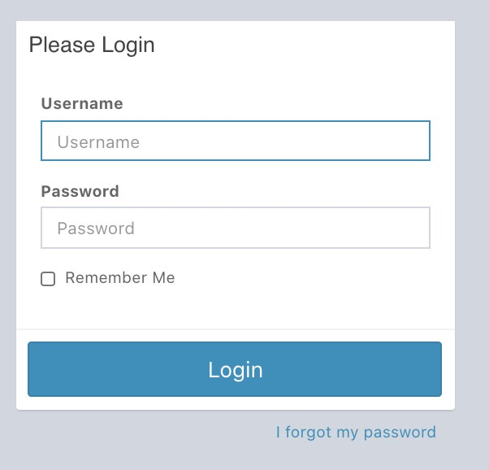
Enter your credentials and login. You should now see the homepage – this one is empty.
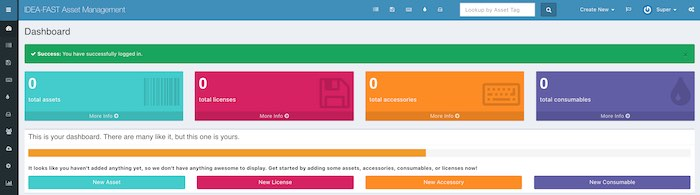
For most of the initial setup work, the relevant will be found in the sidebar under settings
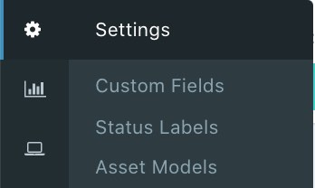
Create Location
Locations are where we assign clinical staff, patient users and assets to.
To create a location, select Locations in the Settings menu. You will now be on the locations page. To make a new location, click the ‘Create New’ button.
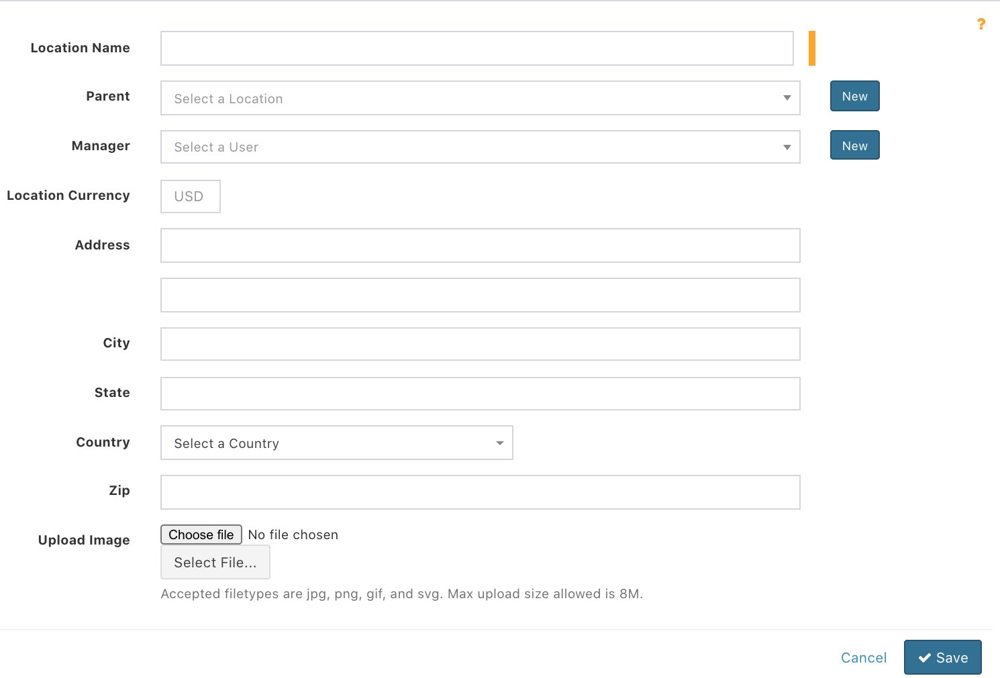
Fill this in and click ‘Save’. Your new location should now be visible on the screen.
Create Asset Model
Asset models will be the selection of devices a specific asset can possibly be.
To create a location, select Asset Models in the Settings menu. You will now be on the asset models page. To make a new asset models, click the ‘Create New’ button.
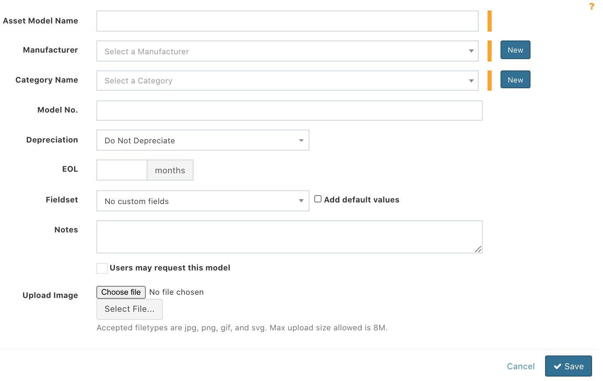
For these, it is required to select a manufacturer and company name. These can be created by clicking the ‘New’ button next to their dropdown boxes. A pop-up will now appear, enter the details, and click ‘Save’ to create them. Fill in any other known fields and click ‘Save’. Your new asset model will now be visible on the screen.
Create Clinical Staff Admin
To create a clinical staff admin, first select the people icon (2 above setting on the LHS bar). You should now be on the people page. Now select ‘Create New’.
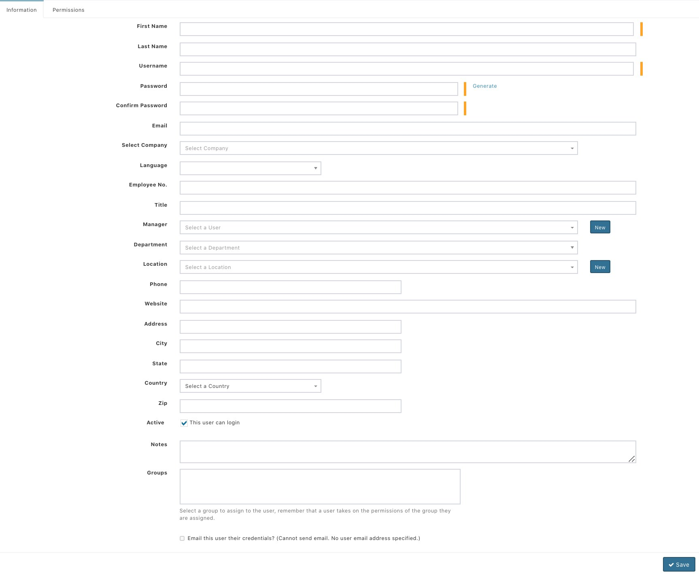
In this page, you should select the correct Location – which should hopefully already have been added – for the clinical staff. Ideally, their email addresses should be added and the checkbox to send them their credentials by email should be checked. Fill in any other relevant fields.
Click on the Permissions tab and configure as shown, leaving all others unchanged and then click ’Save’.
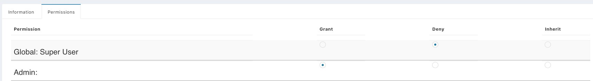
The Clinical Staff Admin has now been created.
Create Patient User
To create a patient user, first select the people icon (2 above setting on the LHS bar). You should now be on the people page. Now select ‘Create New’.
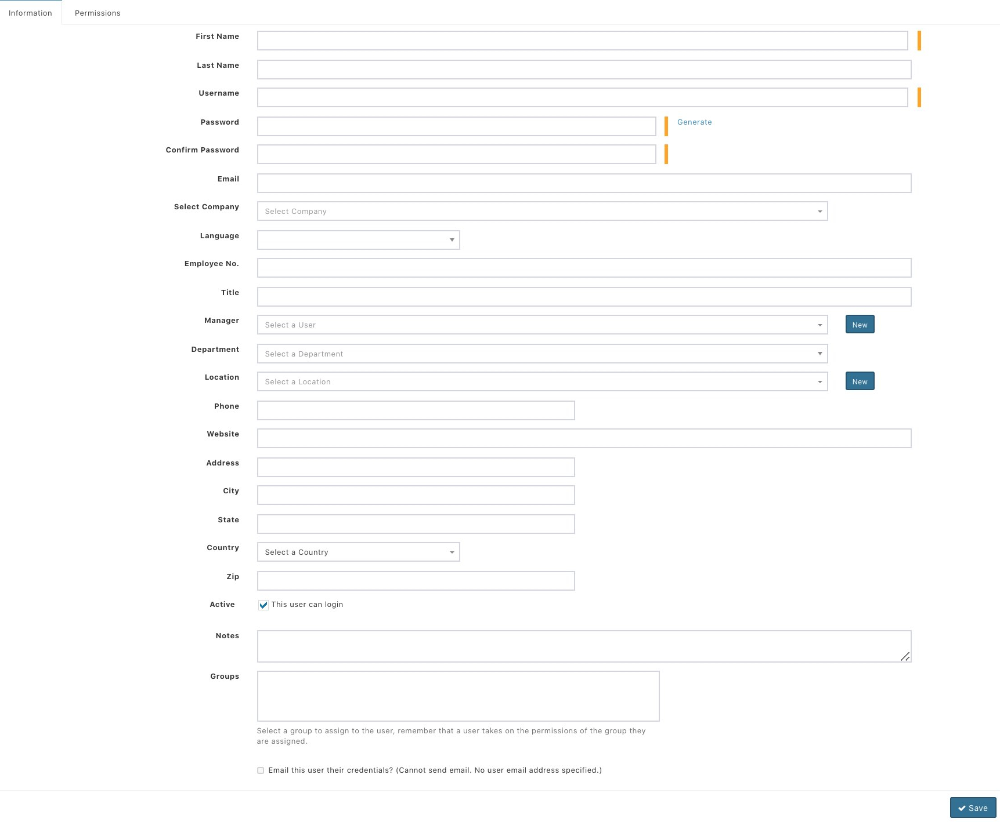
In this page, you should select the correct Location – which should hopefully already have been added – for the patient. Their username should likely be their unique id number.
The Active checkbox should be unchecked.
Click on the Permissions tab and configure as shown, leaving all others unchanged and then click ’Save’.
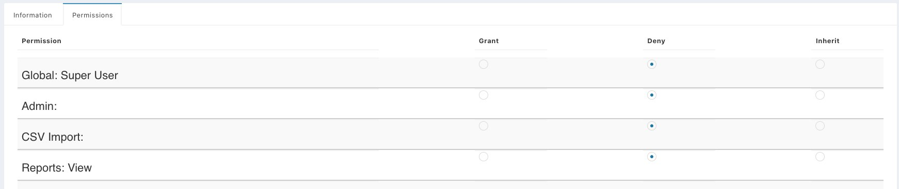
The Patient User has now been created.
Create Asset
To access assets overview, select ‘List All’ in LHS bar as shown.
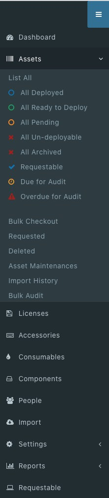
You should now be on the assets page. Now select ‘Create New’.
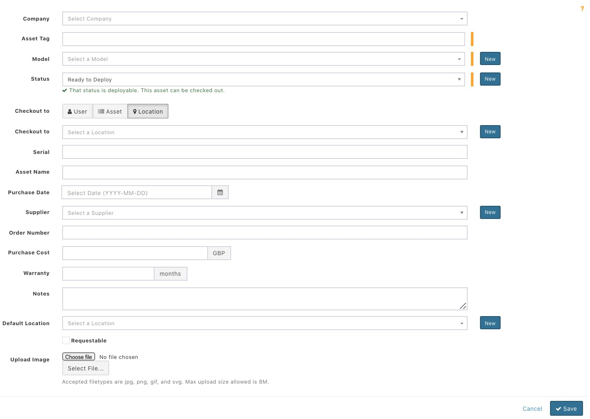
The Asset Tag should be the unique id number for the asset.
In this page, you should select the correct Default Location – which should hopefully already have been added – for the asset.
The same goes for the correct Asset Model.
The status should be set to ‘Ready to Deploy’ and ‘Checkout to’ tab should be set to ‘Location’ with the dropdown left unselected.
Note that you should always add the Serial number of the device into the Serial input – this will allow us to identify devices if their IDEA-FAST id tag goes missing from the device.
Fill in any other relevant fields and click ‘Save’. The new asset will now be visible on the screen.
Check in/Check out Asset
To check out an asset, select the ‘Checkout’ button on an asset. This page will appear.
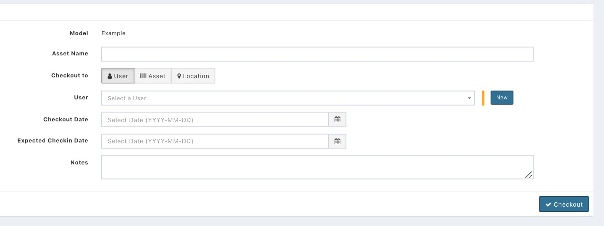
Select the correct ‘User’ the device is with and click Checkout.
To check in an asset – when it is received back at a location from a user – select the ‘Checkin’ button on an asset.
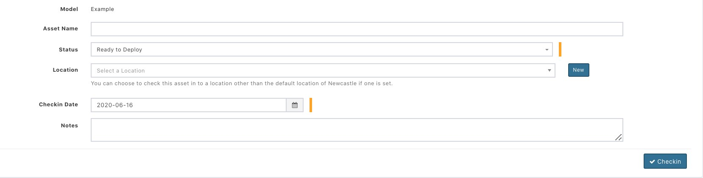
Simply select ‘Ready to Deploy’ in the Status dropdown and click Checkin.
Determine Asset Location at specific time
The assets table will show the asset’s current location. To determine its location through history, slightly more steps are required.
This may be very useful if a device has been with multiple patients.
To do so, click on an asset’s name in the asset table.
You will now see this approximately.
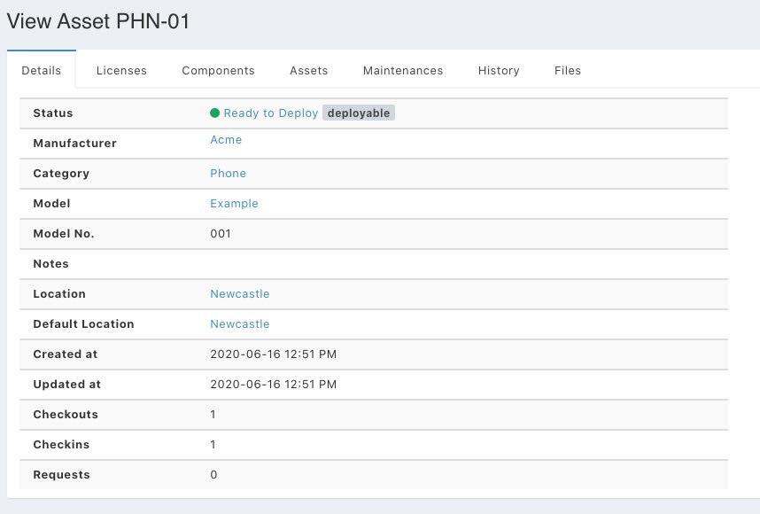
Click on the History tab and you will see this approximately.
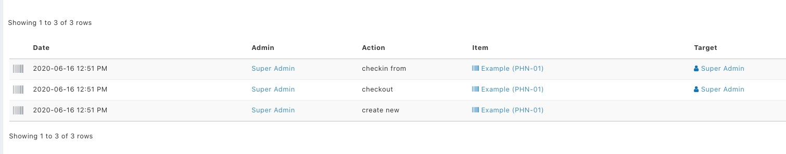
The dates here can be used to determine when each patient had the relevant device and which admin was responsible for recording this.